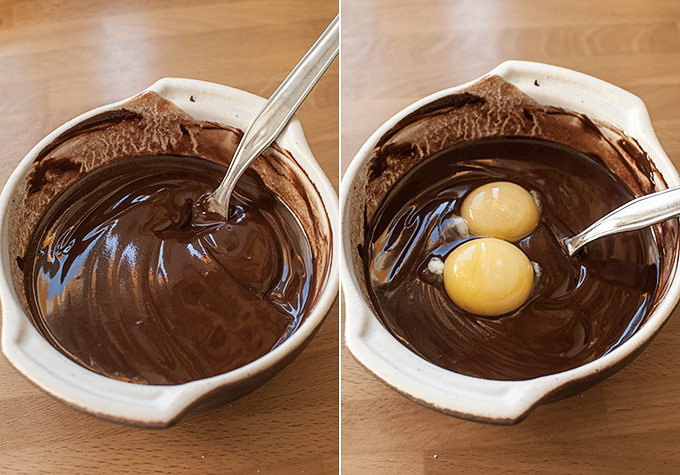
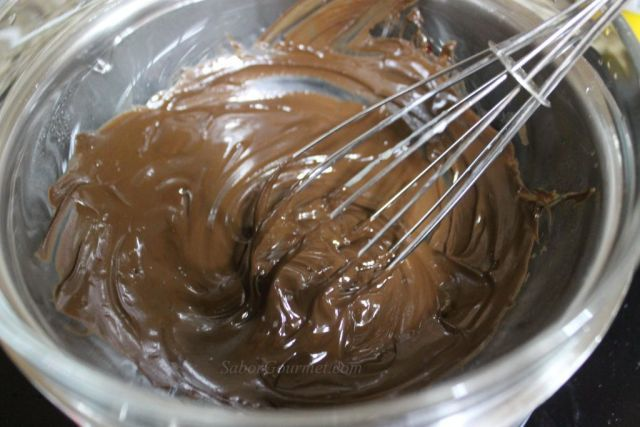
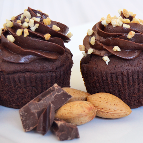

Procedimiento
1. Poner la mantequilla a temperatura ambiente. Batir las yemas con la mitad del azúcar, añadir la mantequilla y batir todo, añadir la mitad del chocolate derretido al baño maría. Montar las claras a punto de nieve y añadirle la otra mitad del azúcar. Cuando esté consistente se va añadiendo a la anterior masa en forma envolvente para que no se baje, se le añade la mitad de la almendra triturada y la naranja confitada.

2. Se vierte en moldes de magdalenas, en mi caso en moldes de cupcake pequeños, lo introduces en el horno a 180 grados unos 20 minutos.
3. Mientras, el chocolate restante se funde al baño maría y se le añade nata y se deja a la espera de que salgan los bizcochitos.

4. Cuando estén, se dejan enfriar y se cubren con el chocolate y se adornan con la almendra fileteada

Volver